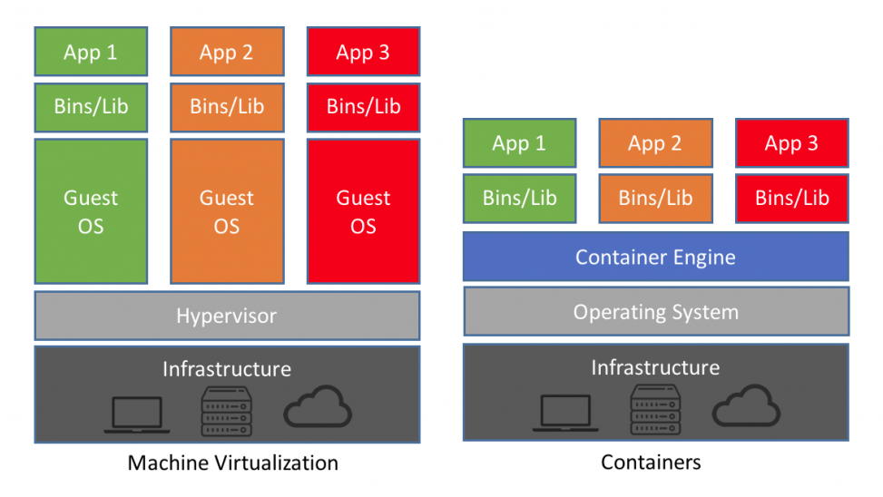

class: middle, center --- class: middle # About me * Lead Software Engineer * ryanrolds@gmail.com * https://github.com/ryanrolds --- class: middle, center # Questions? Comments? Raise your hand. https://github.com/ryanrolds/docker_presentation_slides https://github.com/ryanrolds/docker_presentation_code --- class: middle # Overview * Pain points * Containers * Docker * Docker Compose --- class: middle # Pain Points * Keeping local env up-to-date * Time * Skillset * Syncronizing releases * On-boarding --- class: middle # Micro vs Monolithic * Docker helps with both * Microservices benefit more --- class: middle # Routine Maintenance * Updating databases is annoying * Not everyone is a sys admin * Shared enviornments require more syncronization --- class: middle # Containers vs. VMs * Are virtual machines deprecated? * Do you need the extra OS boundary? --- class: no-margins  --- class: middle # Docker Containers * Very popular container solution * All containers on a host share network and storage --- class: middle # Installing * Runs on Linux, Windows 10, and MacOS X * Windows and MacOS use a VM to run Docker Engine * Windows Bash requires additional steps --- class: middle # Our Repo * Node.js App * Responds to all requests with a view counter --- class: middle # Directory ```bash $ ls -l -rw-rw-rw- 1 ryan ryan 618 Jul 22 17:12 docker-compose.yml -rw-rw-rw- 1 ryan ryan 120 Jul 22 13:19 Dockerfile -rw-rw-rw- 1 ryan ryan 780 Jul 22 17:33 index.js drwxrwxrwx 1 ryan ryan 512 Jul 22 17:19 migrations drwxrwxrwx 1 ryan ryan 512 Jul 22 16:26 node_modules -rw-rw-rw- 1 ryan ryan 252 Jun 30 16:35 package.json -rw-rw-rw- 1 ryan ryan 16997 Jun 30 16:35 package-lock.json -rw-rw-rw- 1 ryan ryan 94 Jul 22 16:31 README.md drwxrwxrwx 1 ryan ryan 512 Jul 22 17:29 src ``` --- class: middle # Application code ```javascript const http = require('http'); const express = require('express')(); const db = require('./src/db'); app.get('/', (req, res) => { db.incCount(req.connection.remoteAddress).then((result) => { res.send('Hello World! You have visited this page ' + result.rows[0].value); }).catch((err) => { console.error(err); res.status(500).send('Error accessing database'); }); }); const server = http.createServer(app); server.listen(8080, () => console.log('Example app listening on port 8080!')); ``` --- class: middle # Dockerfile ```dockerfile FROM node:10 WORKDIR /app ADD . /app RUN npm install EXPOSE 8080 ENV NAME docker_pres_frontend CMD ["node", "index.js"] ``` --- class: middle # Docker Images * Docker Hub has over 10k images * All the popular services have images * It's easy to publish your own --- class: middle # Building & Running ```bash $ docker build -t frontend . Sending build context to Docker daemon 84.99kB Step 1/7 : FROM node:10 Step 2/7 : WORKDIR /app Step 3/7 : ADD . /app Step 4/7 : RUN npm install Step 5/7 : EXPOSE 8080 Step 6/7 : ENV NAME docker_pres_frontend Step 7/7 : CMD ["node", "index.js"] Successfully built 2cb657bc6a41 Successfully tagged frontend:latest ``` --- class: middle # Running The Image ```bash $ docker run frontend Example app listening on port 8080! ``` ```bash $ docker run -d frontend 6f45e31079108354d91b30570fed9ed451e50a17dcefe80fb3f73946ce7c240f $ docker ps CONTAINER ID IMAGE COMMAND CREATED 6f45e3107910 frontend "node index.js" 2 seconds ago STATUS PORTS NAMES Up 1 second 8080/tcp affectionate_curran ``` --- class: middle # Ports ```bash $ curl http://localhost:8080 curl: (7) Failed to connect to localhost port 8080: Connection refused $ docker stop affectionate_curran && docker rm affectionate_curran $ docker run -d -p 8080:8080 frontend fe3b31187149deec2eef99c2c901dfcaa76fd6c106257950d0e75f45abc6bf4e $ docker ps CONTAINER ID IMAGE COMMAND CREATED fe3b31187149 frontend "node index.js" About a minute ago STATUS PORTS NAMES Up About a minute 0.0.0.0:8080->8080/tcp angry_darwin $ curl http://localhost:8080 Error accessing database ``` --- class: middle # Logs ```bash $ docker logs angry_darwin Example app listening on port 8080! ``` ## Important switches * -f, --follow -- Follow log output * --tail string -- Number of lines to show from the end of the logs (default "all") --- class: middle # DB & Migrations * Spin up PostgreSQL database * Run database migrations ## Create PG container ```bash $ docker run -d -p 5432:5432 -e POSTGRES_PASSWORD=password \ -e POSTGRES_USER=frontend -e POSTGRES_DB=frontend postgres:9.6 75dee7ced317c8e2c1c4df78eb07207215021d9a0368e2729f1b182cedc2e8bd $ docker ps CONTAINER ID IMAGE COMMAND CREATED 75dee7ced317 postgres:9.6 "docker-entrypoint..." 11 seconds ago STATUS PORTS NAMES Up 10 seconds 0.0.0.0:5432->5432/tcp angry_jang ``` --- class: middle # Docker Compose * Simplifies managing multiple containers * Makes starting/stopping local env easy ## So much easier ```bash $ docker-compose up -d Starting docker_pres_frontend_db_1 ... done Starting docker_pres_frontend_migrations_1 ... done Starting docker_pres_frontend_frontend_1 ... done $ docker-compose stop Stopping docker_pres_frontend_frontend_1 ... done Stopping docker_pres_frontend_db_1 ... done $ docker-compose pull ``` --- class: middle # docker-compose.yml ```yaml version: '3.3' services: db: ... migrations: ... frontend: ... ``` --- class: middle # DB Service ```yaml services: db: image: postgres:9.6 restart: always ports: - "5432:5432" environment: POSTGRES_PASSWORD: password POSTGRES_USER: frontend POSTGRES_DB: frontend ``` --- class: middle # Migrations Service ```yaml services: migrations: build: context: migrations dockerfile: Dockerfile depends_on: - db environment: DATABASE_URL: postgresql://frontend:password@db:5432/frontend ``` --- class: middle # Frontend Service ```yaml services: frontend: build: . depends_on: - db - migrations ports: - "8080:8080" restart: always environment: DATABASE_URL: postgresql://frontend:password@db:5432/frontend ``` --- class: middle # Start In Foreground ```bash $ docker-compose up --build ... Starting docker_pres_frontend_db_1 ... done Starting docker_pres_frontend_migrations_1 ... done Starting docker_pres_frontend_frontend_1 ... done Attaching to docker_pres_frontend_db_1, docker_pres_frontend_migrations_1, docker_pres_frontend_frontend_1 db_1 | LOG: database system was shut down at 2018-07-22 23:09:53 UTC db_1 | LOG: MultiXact member wraparound protections are now enabled db_1 | LOG: database system is ready to accept connections db_1 | LOG: autovacuum launcher started migrations_1 | [INFO] No migrations to run migrations_1 | [INFO] Done docker_pres_frontend_migrations_1 exited with code 0 frontend_1 | Example app listening on port 8080! ``` --- class: middle # Start In Background ```bash $ docker-compose up -d Starting docker_pres_frontend_db_1 ... done Starting docker_pres_frontend_migrations_1 ... done Starting docker_pres_frontend_frontend_1 ... done $ docker-compose ps Name Command State Ports --------------------------------------------------------------------------------------------------- docker_pres_frontend_db_1 docker-entrypoint.sh postgres Up 0.0.0.0:5432->5432/tcp docker_pres_frontend_frontend_1 node index.js Up 0.0.0.0:8000->8080/tcp docker_pres_frontend_migrations_1 node index.js Exit 0 ``` --- # Updating The Containers ```bash $ git pull ... $ docker-compose pull Pulling db ... done Pulling migrations ... done Pulling frontend ... done $ docker-compose up -d --build ... ``` --- class: middle # Developer environments * Use a private image repo * Have build server create images and upload images * Check the docker-compose.yml in to an env repo * Add docker-compose.yml to your service repos * Implement hot reload (watcher) to rebuild and restart service container --- class: middle # What next? Install Docker and dockerize your dev environment. Lots of great information at https://docs.docker.com/get-started/ --- class: middle, center # Questions? --- class: middle, center # Thanks <place holder for next event>